Getting competing port operators to share cargo data
Port operators coordinated cargo across competing companies with phone calls and spreadsheets. I designed a platform where each role sees exactly what it needs to act, and that competitors trust enough to actually use.
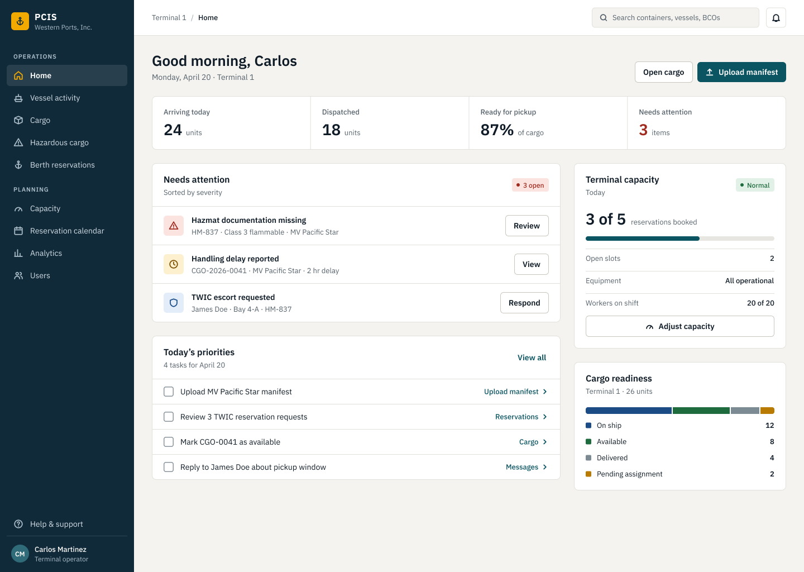
Self-initiated concept redesign. See section 07.
- Role
- Lead UX Designer
- Client
- Leidos
- Timeframe
- 2025 – present
- Team
- PM, Solutions Architect, 2 Engineers
- Status
- Phase 1 validated · Phase 2 in design
A trust problem, not just a UI problem
Ports are competitive. Terminal operators and cargo owners hold back data for fear of losing their edge, which leads to endless phone calls, wasted truck trips and long delays. The platform had to feel safe enough for competitors to share data, and simple enough for stressed operators to use.
Before designing, I audited 4 legacy port management systems. Two patterns stood out:
Information overload
Most looked like giant spreadsheets. Emergencies were buried in a mountain of rows.
Reactive only
They showed what was happening now, with no way to see a busy afternoon coming.
Three roles, three reasons not to engage
Carlos, Terminal Operator
Instead of thousands of containers, he sees exception alerts: only the issues that need him now.
Cognitive loadDavid, Cargo Owner
He can share a status like Ready or Delayed without revealing his cargo's value to competitors.
Psychological safetyMaria, Dispatcher
A live dashboard replaces her 20+ daily phone calls, so she can schedule trucks from her desk.
Reducing uncertaintyFrom spreadsheet rows to scannable status
Legacy systems use cramped rows where every line looks the same; to find one container you read fifty. Phase 1 replaced 15-column tables with cards anchored by the cargo unit ID, so operators handle one shipment at a time and the status stands out.
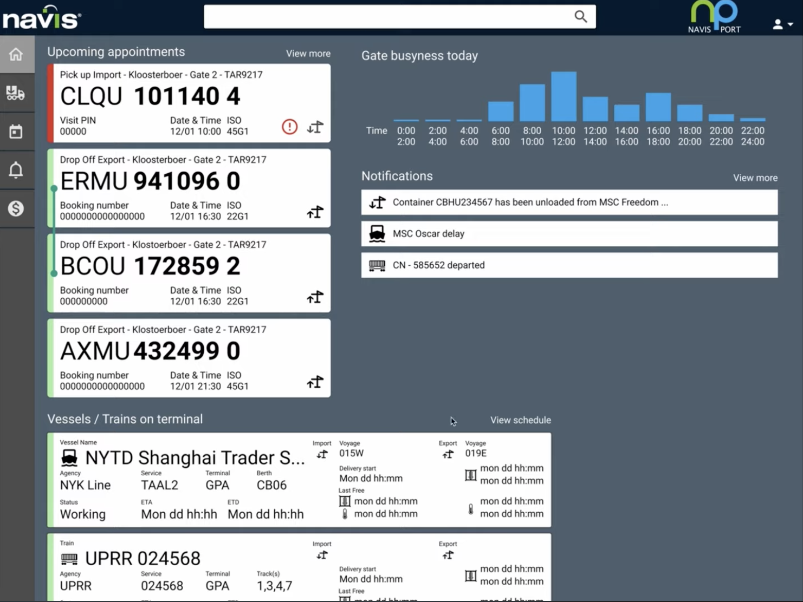
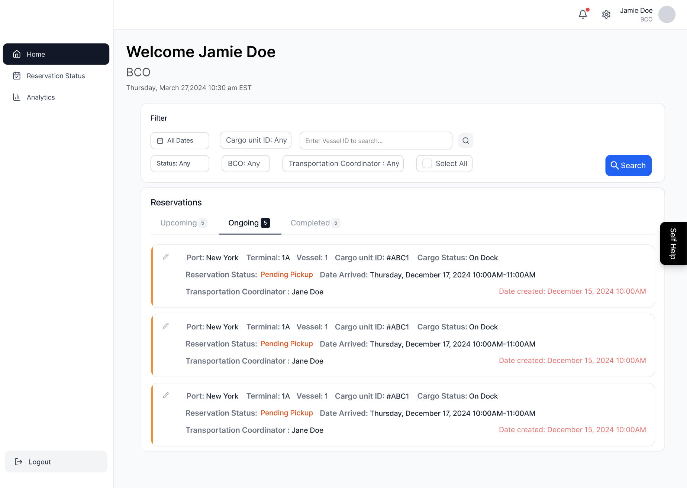
Built for the port floor
The hazardous cargo workflow
Hazmat is the highest-stakes workflow in the port. Flagged containers carry persistent warnings, any status change requires confirming the cargo class, every relevant stakeholder is notified, and every action is logged with a timestamp and actor.
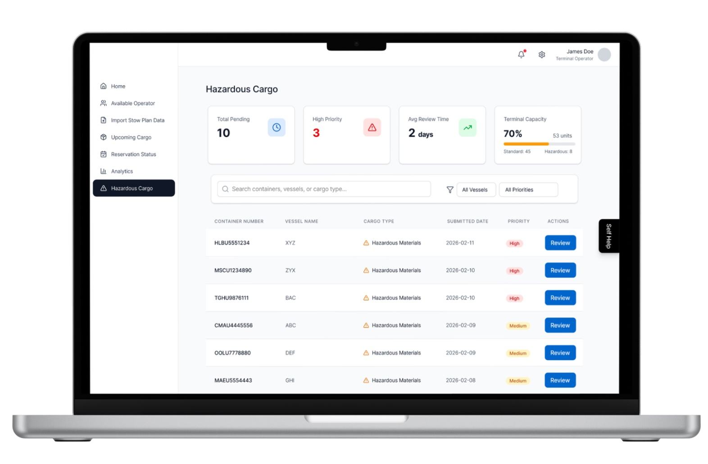
What stakeholders said
Our team ran remote, task-based walkthroughs with 7 stakeholders across three states, including terminal operators and vendors, using the System Usability Scale and open-ended questions. I helped write the tasks and coded the results.
Their words, not ours
Stakeholders said "Appointment," not "Booking." UI copy now uses port-floor vocabulary.
Show my place in line
Users wanted to see where they were in the process, so the header gained a linear status indicator.
Built for real volume
The platform must handle up to 300 truck operators. That finding shaped Phase 2.
Designing for scale
My first designs leaned so far away from spreadsheets that they were too minimal for real data volumes. When stakeholders said PCIS has to handle 300+ truck operators, I mocked up realistic volumes and redesigned for scale. In Phase 2, I'm the sole designer across 12+ personas, and data-heavy views use standardized tables that stay scannable.
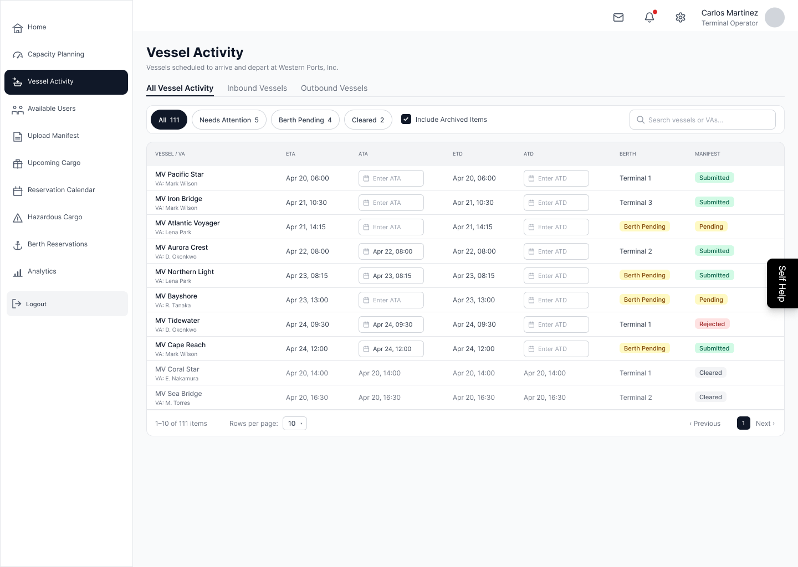
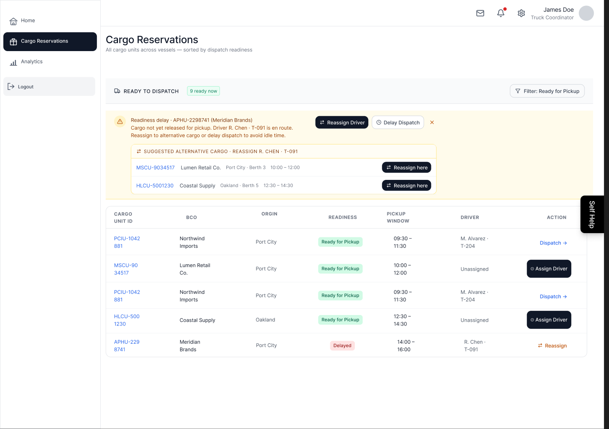
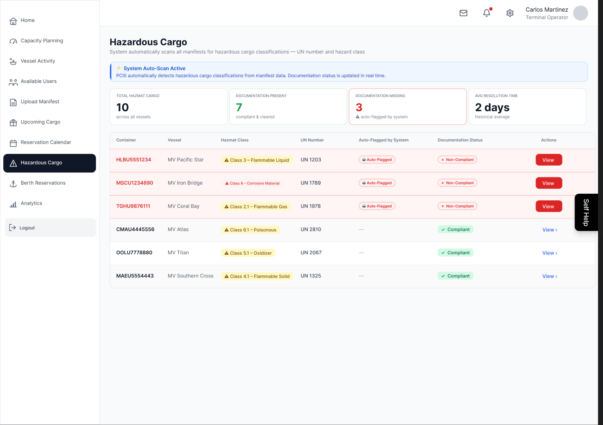
A Table Style Guide as the source of truth
To keep dozens of tables consistent across personas, I wrote a Table Style Guide: one term per state, five badge tones, two table types, and one word per action. Engineering builds new tables from it.
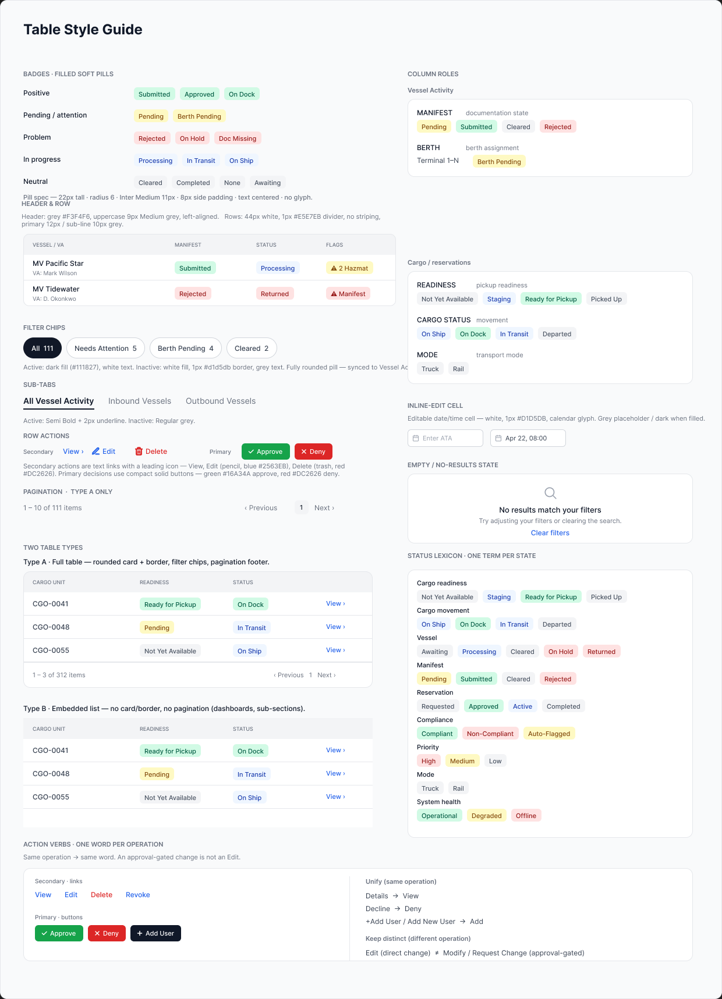
The system behind the tables
The style guide's rules live as tokens and components in a Figma library, so every persona's screens share one status language. Every text pairing passes WCAG 2.1 AA, and the type scale has an 11px floor.
Status badges: one meaning per tone
Positive, attention, problem, in progress and neutral. The label is always there, so status never relies on color alone.
Decision buttons
Approve uses green-700 so white text passes AA (5.0:1). Every button has a 3px blue focus ring for keyboard users.
Readable data
11px uppercase headers in gray-600 (6.9:1), 44px rows, and secondary text in gray-500 (4.8:1).
Pushing the Phase 2 screens further
Looking back at my Phase 2 screens, they worked, but they read like a default UI kit: stock blues, a long flat nav, and tables with a column for every field. On my own, I redesigned four key screens as a concept to see how far a clearer identity and less density could go. This isn't shipped; it's where I'd push the next iteration.
A port identity
Harbor navy, a deep teal for actions and an amber accent that echoes dock safety markings. Container IDs and UN numbers use a monospaced face, so O and 0 can't be confused.
RecognitionOne shell, one language
Every screen shares the same nav, header, filters and five status tones. Nav went from 11 flat links to 9 links in two groups: Operations and Planning.
ConsistencyFewer columns, one action
Scheduled and actual times merge into one Arrival and one Departure column, a column every row shared is gone, and each row gets one clearly named action.
Cognitive load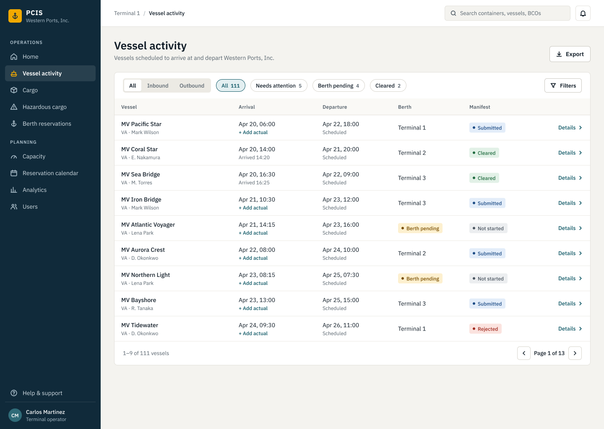
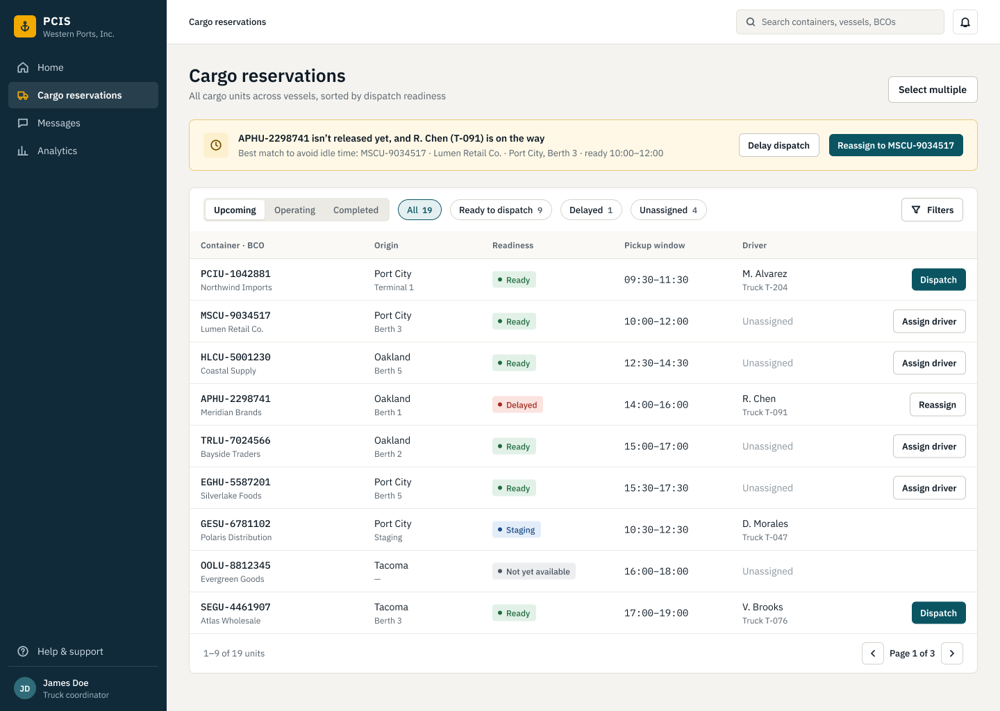
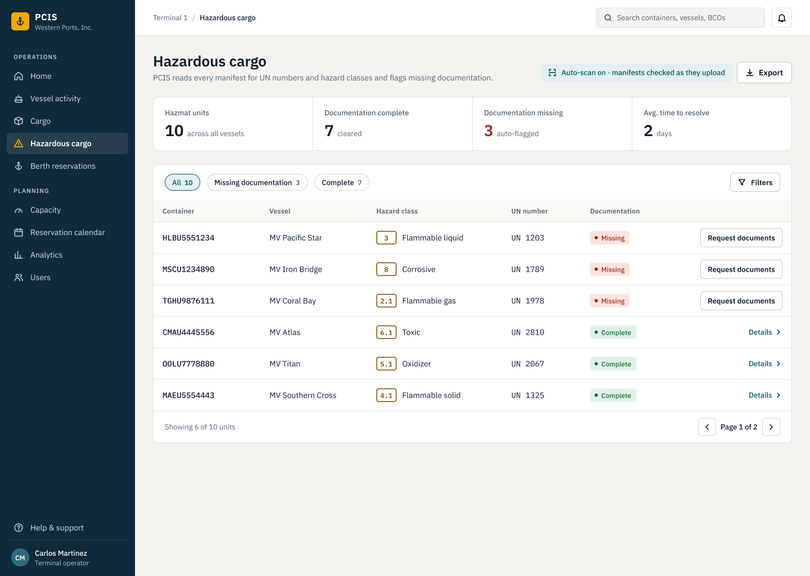
Every text pairing in the concept passes WCAG 2.1 AA (lowest 5.6:1), and every status keeps a text label next to its color.
Where it stands
PCIS went from a contested data-sharing idea to a validated platform with multi-state buy-in, and I'm now leading Phase 2 design in refinement sessions with engineering.
See bottlenecks coming
Moving from static lists to visual graphs so managers can spot a busy afternoon hours ahead.
Stay fast at volume
Keeping the UI responsive with real-time data for 300+ truck operators.
Know where cargo is
A visual lifecycle view, so users always see where their cargo is without hunting through text.